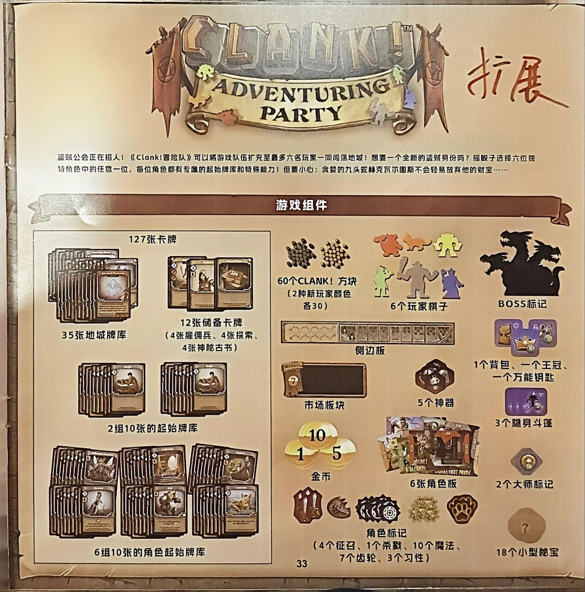
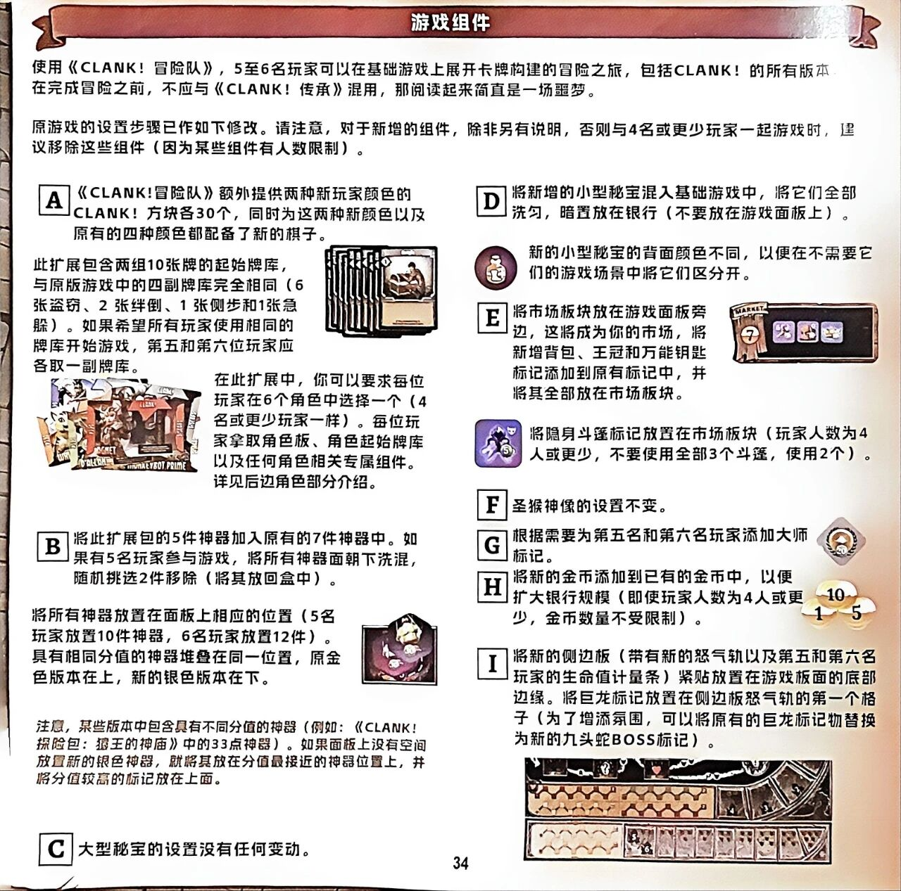
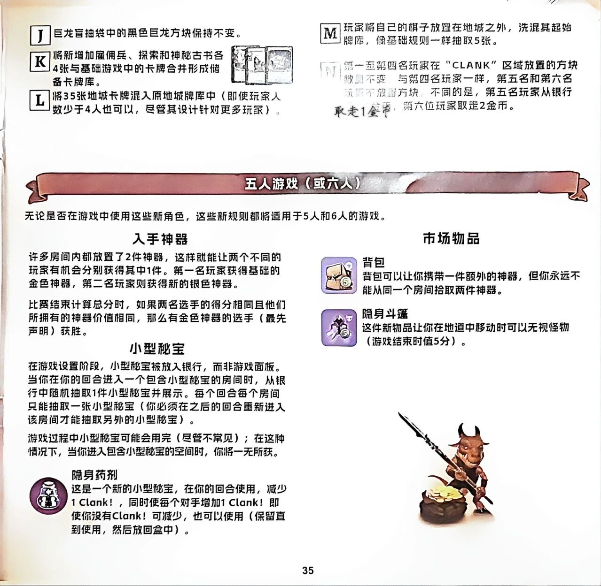
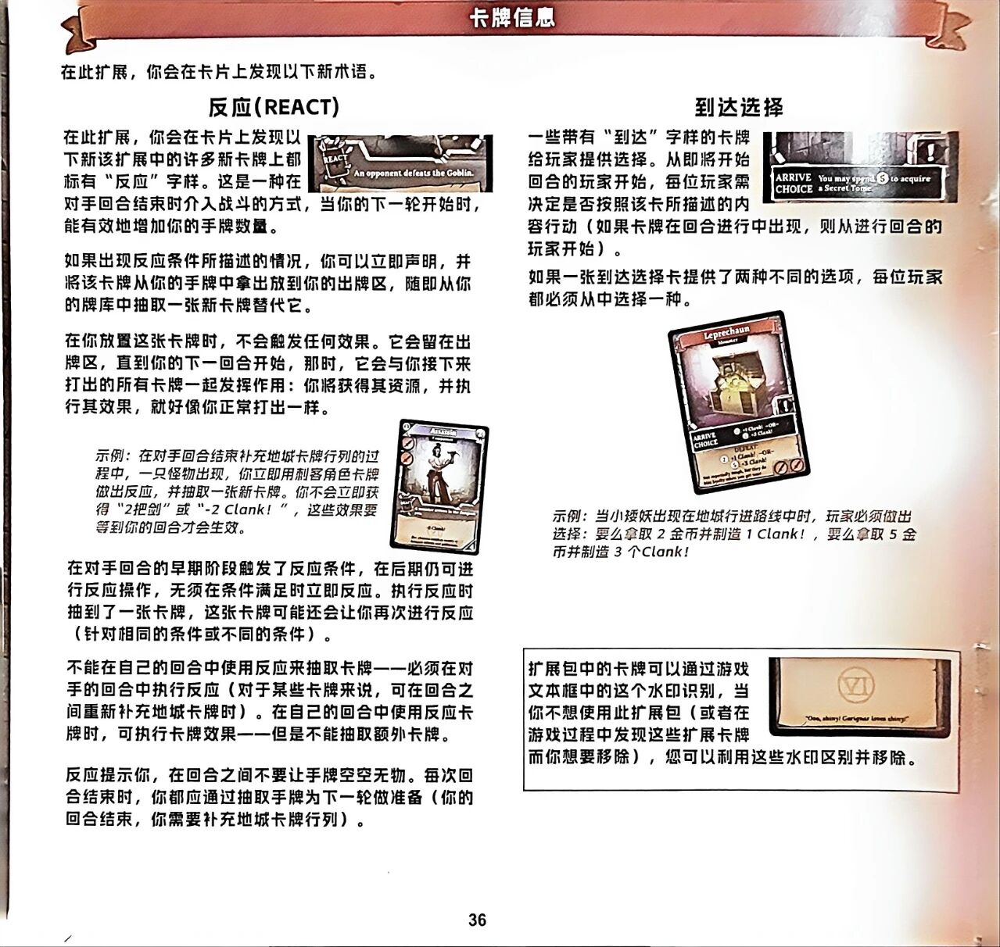
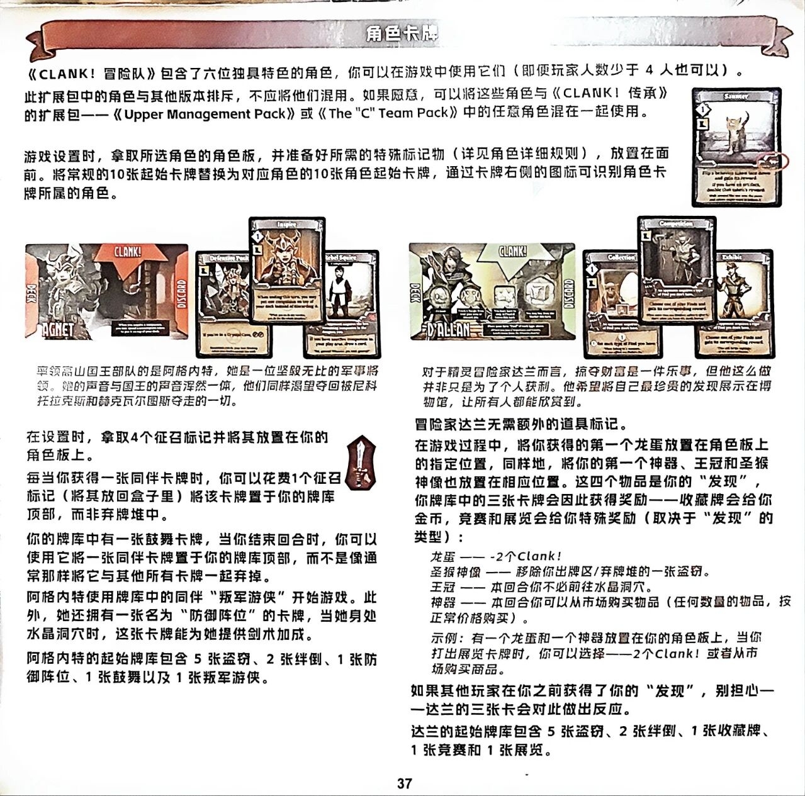
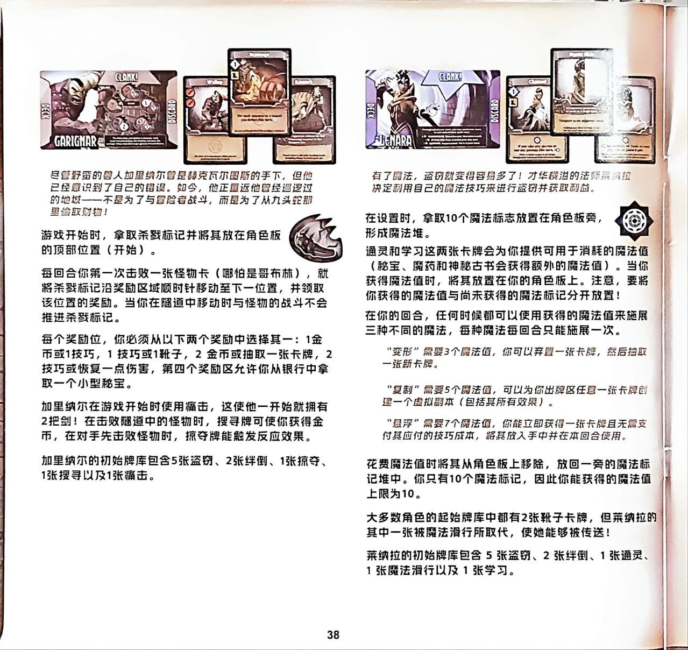

🗡️ CLANK! 冒险队
Clank! Adventuring Party · 设计:Paul Dennen · Dire Wolf 出品/Renegade Game Studios(官方中文规则书全文转录) · 《CLANK!》5–6 人扩展(需配合基础游戏)

本页整理自微信公众号「无忧桌游」《地下墓穴 扩展》所载官方简体中文规则书扫描件,逐页全文转录,扫描图随文嵌入——点击任意图片即可放大查看。规则内容归 Dire Wolf、Renegade Game Studios 及版权方所有,转录仅供个人学习查阅。需配合《CLANK!》基础游戏使用;本站另收录《CLANK! 地下墓穴》及其扩展《CLANK! 地下墓穴:地下世界》规则页。
整理说明:扫描共 6 图(封底+页 34–38);总述称本扩展含六位专属角色,原帖扫描止于第 38 页(阿格内特/达兰/加里纳尔/莱纳拉四位),其余角色页未见于原帖,暂缺;被装订阴影遮盖处依残笔辨录,无法辨认处以〔?〕标注;正文为简体照录;小节标题与〔图:…〕说明为整理所拟。
〔图 CLANK! ADVENTURING PARTY标志〕〔图 手写「扩展」二字〕
盗贼公会正在招人！《Clank!冒险队》可以将游戏队伍扩充至最多六名玩家一同闯荡地城！想要一个全新的盗贼身份吗？摇骰子选择六位独特角色中的任意一位，每位角色都有专属的起始牌库和特殊能力！但要小心：贪婪的九头蛇赫克瓦尔图斯不会轻易放弃他的财宝……
游戏组件（封底清单）
- 127张卡牌
- 35张地城牌库
- 12张储备卡牌（4张雇佣兵、4张探索、4张神秘古书）
- 2组10张的起始牌库
- 6组10张的角色起始牌库
〔图 棕色CLANK!方块照片〕
60个CLANK!方块（2种新玩家颜色各30）
〔图 六个人形玩家棋子照片〕
6个玩家棋子
〔图 黑色九头蛇剪影〕
BOSS标记
〔图 长条侧边板照片〕
侧边板
〔图 背包、王冠、钥匙等紫色配件照片〕
1个背包、一个王冠、一个万能钥匙
〔图 市场板块照片〕
市场板块
〔图 六边形神器板块照片〕
5个神器
〔图 紫色斗篷标记照片〕
3个隐身斗篷
〔图 面额10、1、5的金币照片〕
金币
〔图 角色板照片〕
6张角色板
〔图 菱形大师标记照片〕
2个大师标记
〔图 各式角色标记照片〕
角色标记（4个征召、1个杀戮、10个魔法、7个齿轮、3个习性）
〔图 印有「?」的布袋秘宝照片〕
18个小型秘宝

游戏组件
使用《CLANK!冒险队》，5至6名玩家可以在基础游戏上展开卡牌构建的冒险之旅，包括CLANK!的所有版本。在完成冒险之前，不应与《CLANK!传承》混用，那阅读起来简直是一场噩梦。
原游戏的设置步骤已作如下修改。请注意，对于新增的组件，除非另有说明，否则与4名或更少玩家一起游戏时，建议移除这些组件（因为某些组件有人数限制）。
步骤A
《CLANK!冒险队》额外提供两种新玩家颜色的CLANK!方块各30个，同时为这两种新颜色以及原有的四种颜色都配备了新的棋子。
此扩展包含两组10张牌的起始牌库，与原版游戏中的四副牌库完全相同（6张盗窃、2张绊倒、1张侧步和1张急躲）。如果希望所有玩家使用相同的牌库开始游戏，第五和第六位玩家应各取一副牌库。
〔图 起始牌库牌堆照片〕
在此扩展中，你可以要求每位玩家在6个角色中选择一个（4名或更少玩家一样）。每位玩家拿取角色板、角色起始牌库以及任何角色相关专属组件。详见后边角色部分介绍。
〔图 角色板照片〕
步骤B
将此扩展包的5件神器加入原有的7件神器中。如果有5名玩家参与游戏，将所有神器面朝下洗混，随机挑选2件移除（将其放回盒中）。
将所有神器放置在面板上相应的位置（5名玩家放置10件神器，6名玩家放置12件）。具有相同分值的神器堆叠在同一位置，原金色版本在上，新的银色版本在下。
〔图 神器照片〕
（斜体说明）注意，某些版本中包含具有不同分值的神器（例如：《CLANK!探险包：猿王的神庙》中的33点神器）。如果面板上没有空间放置新的银色神器，就将其放在分值最接近的神器位置上，并将分值较高的标记放在上面。
步骤C
大型秘宝的设置没有任何变动。
步骤D
将新增的小型秘宝混入基础游戏中，将它们全部洗匀，暗置放在银行（不要放在游戏面板上）。
〔图 小型秘宝照片〕新的小型秘宝的背面颜色不同，以便在不需要它们的游戏场景中将它们区分开。
步骤E
将市场板块放在游戏面板旁边，这将成为你的市场，将新增背包、王冠和万能钥匙标记添加到原有标记中，并将其全部放在市场板块。
〔图 市场板块照片〕
〔图 隐身斗篷标记照片〕将隐身斗篷标记放置在市场板块（玩家人数为4人或更少，不要使用全部3个斗篷，使用2个）。
步骤F
圣猴神像的设置不变。
步骤G
根据需要为第五名和第六名玩家添加大师标记。
〔图 大师标记照片〕
步骤H
将新的金币添加到已有的金币中，以便扩大银行规模（即使玩家人数为4人或更少，金币数量不受限制）。
〔图 金币面值照片（10、1、5）〕
步骤I
将新的侧边板（带有新的怒气轨以及第五和第六名玩家的生命值计量条）紧贴放置在游戏板面的底部边缘。将巨龙标记放置在侧边板怒气轨的第一个格子（为了增添氛围，可以将原有的巨龙标记物替换为新的九头蛇BOSS标记）。
〔图 侧边板照片〕

步骤J
巨龙盲抽袋中的黑色巨龙方块保持不变。
步骤K
将新增加雇佣兵、探索和神秘古书各4张与基础游戏中的卡牌合并形成储备卡牌库。
〔图 条目右侧三张叠放的卡牌图案〕
步骤L
将35张地城卡牌混入原地城牌库中（即使玩家人数少于4人也可以，尽管其设计针对更多玩家）。
步骤M
玩家将自己的棋子放置在地城之外，洗混其起始牌库，像基础规则一样抽取5张。
步骤N
第一至第四名玩家在“CLANK”区域放置的方块数量不变，与第四名玩家一样，第五名和第六名玩家不放置方块。不同的是，第五名玩家从银行取走1金币，第六位玩家取走2金币。
五人游戏（或六人）
无论是否在游戏中使用这些新角色，这些新规则都将适用于5人和6人的游戏。
入手神器
许多房间内都放置了2件神器，这样就能让两个不同的玩家有机会分别获得其中1件。第一名玩家获得基础的金色神器，第二名玩家则获得新的银色神器。
比赛结束计算总分时，如果两名选手的得分相同且他们所拥有的神器价值相同，那么有金色神器的选手（最先声明）获胜。
小型秘宝
在游戏设置阶段，小型秘宝被放入银行，而非游戏面板。当你在你的回合进入一个包含小型秘宝的房间时，从银行中随机抽取1件小型秘宝并展示。每个回合每个房间只能抽取一张小型秘宝（你必须在之后的回合重新进入该房间才能抽取另外的小型秘宝）。
游戏过程中小型秘宝可能会用完（尽管不常见）；在这种情况下，当你进入包含小型秘宝的空间时，你将一无所获。
隐身药剂
〔图 紫色圆形药水瓶图标〕这是一个新的小型秘宝，在你的回合使用，减少1 Clank!，同时使每个对手增加1 Clank!即使你没有Clank!可减少，也可以使用（保留直到使用，然后放回盒中）。
市场物品
背包
〔图 背包物品卡图标〕背包可以让你携带一件额外的神器，但你永远不能从同一个房间拾取两件神器。
隐身斗篷
〔图 隐身斗篷物品卡图标〕这件新物品让你在地道中移动时可以无视怪物（游戏结束时值5分）。
〔图 页面右下角持矛小恶魔与金币堆插图〕

卡牌信息
在此扩展，你会在卡片上发现以下新术语。
反应（REACT）
〔图 卡牌文本框照片：左侧"REACT" 标识，右侧英文"An opponent defeats the Goblin."〕
在此扩展，你会在卡片上发现以下新该扩展中的许多新卡牌上都标有“反应”字样。这是一种在对手回合结束时介入战斗的方式，当你的下一轮开始时，能有效地增加你的手牌数量。
如果出现反应条件所描述的情况，你可以立即声明，并将该卡牌从你的手牌中拿出放到你的出牌区，随即从你的牌库中抽取一张新卡牌替代它。
在你放置这张卡牌时，不会触发任何效果。它会留在出牌区，直到你的下一回合开始，那时，它会与你接下来打出的所有卡牌一起发挥作用：你将获得其资源，并执行其效果，就好像你正常打出一样。
〔图 Assassin卡，卡名"Assassin"，副标题"Companion"〔?〕，效果区可见"-2 Clank!" 字样，其下数行英文小字无法辨认〕
（斜体示例）示例：在对手回合结束补充地城卡牌行列的过程中，一只怪物出现，你立即用刺客角色卡牌做出反应，并抽取一张新卡牌。你不会立即获得“2把剑”或“-2 Clank!”，这些效果要等到你的回合才会生效。
在对手回合的早期阶段触发了反应条件，在后期仍可进行反应操作，无须在条件满足时立即反应。执行反应时抽到了一张卡牌，这张卡牌可能还会让你再次进行反应（针对相同的条件或不同的条件）。
不能在自己的回合中使用反应来抽取卡牌——必须在对手的回合中执行反应（对于某些卡牌来说，可在回合之间重新补充地城卡牌时）。在自己的回合中使用反应卡牌时，可执行卡牌效果——但是不能抽取额外卡牌。
反应提示你，在回合之间不要让手牌空空无物。每次回合结束时，你都应通过抽取手牌为下一轮做准备（你的回合结束，你需要补充地城卡牌行列）。
到达选择
〔图 卡牌文本框照片："ARRIVE CHOICE" "You may spend ⑤ to acquire a Secret Tome."〕
一些带有“到达”字样的卡牌给玩家提供选择。从即将开始回合的玩家开始，每位玩家需决定是否按照该卡所描述的内容行动（如果卡牌在回合进行中出现，则从进行回合的玩家开始）。
如果一张到达选择卡提供了两种不同的选项，每位玩家都必须从中选择一种。
〔图 Leprechaun（小矮妖）怪物卡照片：卡名"Leprechaun"，卡名下副标题小字模糊〔?〕；文本框"ARRIVE CHOICE" 〔?〕"+1 Clank!" —OR— 〔?〕"+3 Clank!"；"DEFEAT" ② "+1 Clank!" —OR— ⑤ "+3 Clank!"；底部两行英文小字模糊无法辨认〔?〕〕
（斜体示例）示例：当小矮妖出现在地城行进路线中时，玩家必须做出选择：要么拿取 2金币并制造1 Clank!，要么拿取 5金币并制造3个Clank!
〔图 卡背照片，文本框中央有圆圈内"VI" 水印，框底一行英文小字："Ooo, shiny!〔?〕love shiny!"（其余无法辨认）〕
扩展包中的卡牌可以通过游戏文本框中的这个水印识别，当你不想使用此扩展包（或者在游戏过程中发现这些扩展卡牌而你想要移除），您可以利用这些水印区别并移除。

角色卡牌
《CLANK!冒险队》包含了六位独具特色的角色，你可以在游戏中使用它们（即便玩家人数少于4人也可以）。
此扩展包中的角色与其他版本排斥，不应将他们混用。如果愿意，可以将这些角色与《CLANK!传承》的扩展包——《Upper Management Pack》或《The "C" Team Pack》中的任意角色混在一起使用。
游戏设置时，拿取所选角色的角色板，并准备好所需的特殊标记物（详见角色详细规则），放置在面前。将常规的10张起始卡牌替换为对应角色的10张角色起始卡牌，通过卡牌右侧的图标可识别角色卡牌所属的角色。
〔图 右上角一张卡牌照片（图案为一只猫），卡牌右侧的角色图标被红笔圈出；卡名印刷模糊无法辨认〕
阿格内特
〔图 阿格内特的角色板（印有AGNET、DECK、DISCARD与CLANK!箭头）及其卡牌Defensive Posture、Inspire、Hobbled Squire〕
率领高山国王部队的是阿格内特，她是一位坚毅无比的军事将领。她的声音与国王的声音浑然一体，他们同样渴望夺回被尼科托拉克斯和赫克瓦尔图斯夺走的一切。
在设置时，拿取4个征召标记并将其放置在你的角色板上。
〔图 征召标记〕
每当你获得一张同伴卡牌时，你可以花费1个征召标记（将其放回盒子里）将该卡牌置于你的牌库顶部，而非弃牌堆中。
你的牌库中有一张鼓舞卡牌，当你结束回合时，你可以使用它将一张同伴卡牌置于你的牌库顶部，而不是像通常那样将它与其他所有卡牌一起弃掉。
阿格内特使用牌库中的同伴“叛军游侠”开始游戏。此外，她还拥有一张名为“防御阵位”的卡牌，当她身处水晶洞穴时，这张卡牌能为她提供剑术加成。
阿格内特的起始牌库包含5张盗窃、2张绊倒、1张防御阵位、1张鼓舞以及1张叛军游侠。
达兰
〔图 达兰的角色板（印有D'ALLAN、DECK、DISCARD与CLANK!箭头）及其卡牌Collection、Competition、Exhibit〕
对于精灵冒险家达兰而言，掠夺财富是一件乐事，但他这么做并非只是为了个人获利。他希望自己最珍贵的发现展示在博物馆，让所有人都能欣赏到。
冒险家达兰无需额外的道具标记。
在游戏过程中，将你获得的第一个龙蛋放置在角色板上的指定位置，同样地，将你的第一个神器、王冠和圣猴神像也放置在相应位置。这四个物品是你的“发现”，你牌库中的三张卡牌会因此获得奖励——收藏牌会给你金币，竞赛和展览会给你特殊奖励（取决于“发现”的类型）：
- 龙蛋——-2个Clank!
- 圣猴神像——移除你出牌区/弃牌堆的一张盗窃。
- 王冠——本回合你不必前往水晶洞穴。
- 神器——本回合你可以从市场购买物品（任何数量的物品，按正常价格购买）。
示例：有一个龙蛋和一个神器放置在你的角色板上，当你打出展览卡牌时，你可以选择——2个Clank!或者从市场购买商品。
如果其他玩家在你之前获得了你的“发现”，别担心——达兰的三张卡会对此做出反应。
达兰的起始牌库包含5张盗窃、2张绊倒、1张收藏牌、1张竞赛和1张展览。

加里纳尔
〔图 加里纳尔的角色板（左侧DECK、右侧DISCARD）及初始牌库卡牌照片〕
尽管野蛮的兽人加里纳尔曾是赫克瓦尔图斯的手下，但他已经意识到了自己的错误。如今，他正重返他曾经巡逻过的地狱——不是为了与冒险者战斗，而是为了从九头蛇那里偷取财物！
游戏开始时，拿取杀戮标记并将其放在角色板的顶部位置（开始）。〔图 杀戮标记〕
每回合你第一次击败一张怪物卡（哪怕是哥布林），就将杀戮标记沿奖励区域顺时针移动至下一位置，并领取该位置的奖励。当你在隧道中移动时与怪物的战斗不会推进杀戮标记。
每个奖励位，你必须从以下两个奖励中选择其一：1金币或1技巧，1技巧或1靴子，2金币或抽取一张卡牌，2技巧或恢复一点伤害，第四个奖励区允许你从银行中拿取一个小型秘宝。
加里纳尔在游戏开始时使用痛击，这使他一开始就拥有2把剑！在击败隧道中的怪物时，搜寻牌可使你获得金币，在对手先击败怪物时，掠夺牌能触发反应效果。
加里纳尔的初始牌库包含5张盗窃、2张绊倒、1张掠夺、1张搜寻以及1张痛击。
莱纳拉
〔图 莱纳拉的角色板（左侧DECK、右侧DISCARD）及初始牌库卡牌照片〕
有了魔法，盗窃就变得容易多了！才华横溢的法师莱纳拉决定利用自己的魔法技巧来进行盗窃并获取利益。
在设置时，拿取10个魔法标志放置在角色板旁，形成魔法堆。〔图 魔法标志〕
通灵和学习这两张卡牌会为你提供可用于消耗的魔法值（秘宝、魔药和神秘古书会获得额外的魔法值）。当你获得魔法值时，将其放置在你的角色板上。注意，要将你获得的魔法值与尚未获得的魔法标记分开放置！
在你的回合，任何时候都可以使用获得的魔法值来施展三种不同的魔法，每种魔法每回合只能施展一次。
“变形”需要3个魔法值，你可以弃置一张卡牌，然后抽取一张新卡牌。
“复制”需要5个魔法值，可以为你出牌区任意一张卡牌创建一个虚拟副本（包括其所有效果）。
“悬浮”需要7个魔法值，你能立即获得一张卡牌且无需支付其应付的技巧成本，将其放入手中并在本回合使用。
花费魔法值时将其从角色板上移除，放回一旁的魔法标记堆中。你只有10个魔法标记，因此你能获得的魔法值上限为10。
大多数角色的起始牌库中都有2张靴子卡牌，但莱纳拉的其中一张被魔法滑行所取代，使她能够被传送！
莱纳拉的初始牌库包含5张盗窃、2张绊倒、1张通灵、1张魔法滑行以及1张学习。